Delirium: the debrief for week 7, Not himself
Thursday, 15:05 · medical assessment
He has dementia. This is not his dementia.
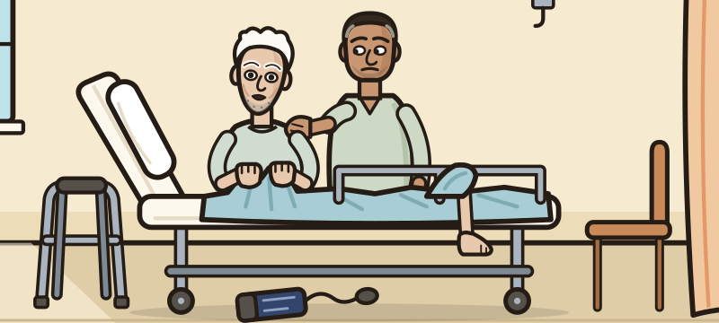

- Stanley Garside, 84, sent in from his nursing home. The ambulance sheet: “Staff report new confusion and aggression. Hit a carer this morning.”
- On a normal day he repeats himself and cannot tell you the date. But he knows the staff, feeds himself and walks to the dining room with a frame.
- Yesterday he did not know the nurse. Last night he tried to leave by the fire door.
- Pulse 96. Blood pressure 148/82. Temperature 37.9 °C. Oxygen saturation 96% on air.
- A change this fast has a name, and a cause to find. The name is delirium.
The decision: what do you call this?
Delirium is a sudden change in thinking and alertness, caused by something physical.
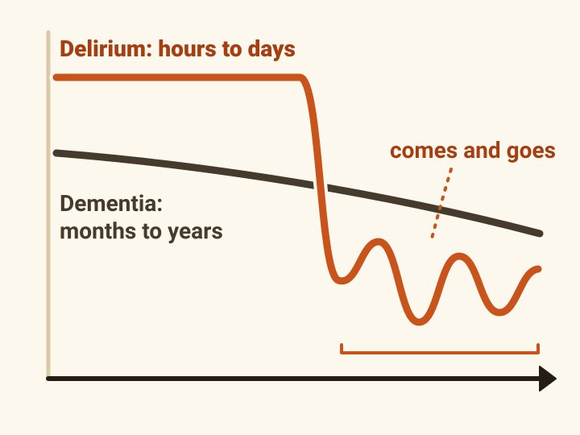
- In plain words: the brain stops working properly, quickly, because the body is ill. One hospital guide calls it a sign of “brain failure”.
- It comes on over hours or days, and it comes and goes through the day.
- What changes: attention, alertness and thinking. Up to half of patients also see or believe things that are not there.
- It used to be called an “acute confusional state”. Write delirium.
- It is a medical emergency. It can often be reversed if the cause is found and treated.
- About one in five adults on an acute medical ward has it, and it is often missed. It is linked to falls, a longer stay, a move into long-term care, dementia and death.
The decision: which patient gets missed?
The quiet kind is the one that gets missed.
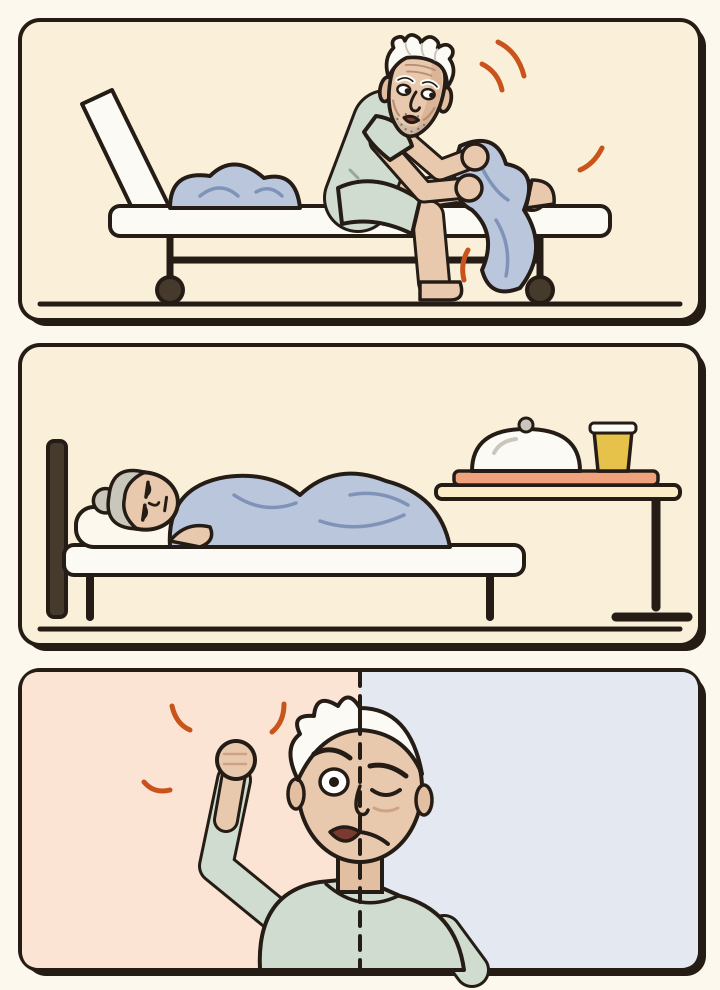
Tap each one.
- The quiet kind is common in older patients. One guide says hypoactive and mixed delirium go unrecognised in up to two thirds of cases.
- Quiet does not mean comfortable: these patients can still be distressed.
The decision: “he’s got dementia, that’s why he’s confused”
The clue is the speed. If you cannot tell, treat it as delirium.
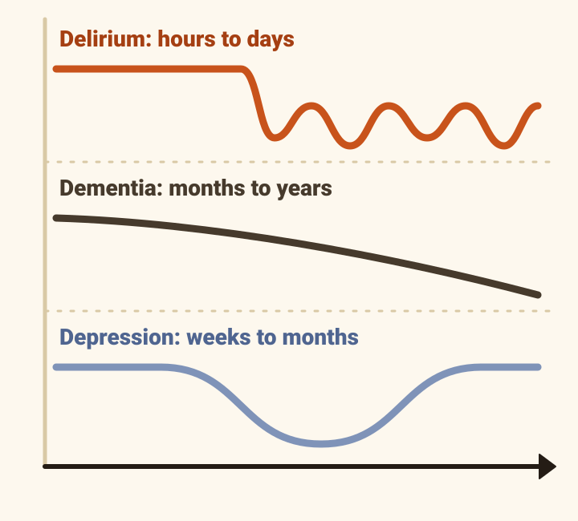
Delirium
- Starts over
- hours to days
- Pattern
- changes through the day
- Alertness
- often impaired
- Gets better?
- yes
Dementia
- Starts over
- months to years
- Pattern
- slowly worse; often worse at night
- Alertness
- often normal
- Gets better?
- not over time
Depression
- Starts over
- weeks to months
- Pattern
- comes in episodes; often worse in the morning
- Alertness
- often normal
- Gets better?
- yes
- These are the classic differences. In real patients they overlap, and many people have delirium and dementia together.
- Depression can look like the quiet kind of delirium.
- NICE: if you cannot tell delirium from dementia, manage the delirium first.
- Stanley: dementia since 2021, and a change that is four days old.
84 · dementia · nine medicines
A vulnerable brain needs only a small push.
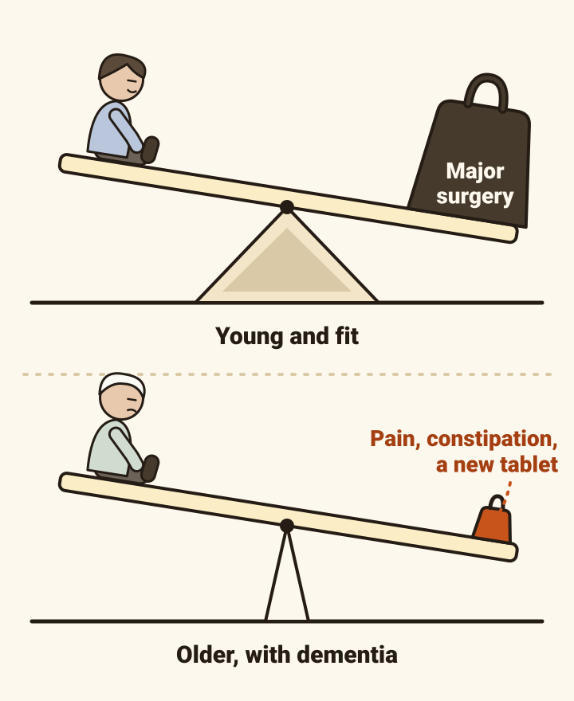
- A young, fit person needs a large insult, such as major surgery, to become delirious. An older person with dementia can be tipped by pain, constipation or one new tablet.
- NICE asks four questions of everyone coming into hospital or long-term care. 65 or older? Dementia or other memory and thinking problems, now or before? A broken hip? Severely ill?
- Any one of them: at risk. Look for a change every day.
- Stanley had at least two before anyone took a blood test.
Tap for the fuller list
- Frailty. Several long-term conditions. A previous delirium. A previous stroke, other neurological disease, or falls.
- Poor sight or hearing.
- More than four medicines, and above all opioids, benzodiazepines and anticholinergic medicines.
- Alcohol misuse. A history of depression.
- Recent surgery or anaesthetic. A urinary catheter. Restraint. Pain.
- Several moves between wards. A recent discharge from hospital.
The phone call · “that is not Stanley”
Ask someone who knows them one question.
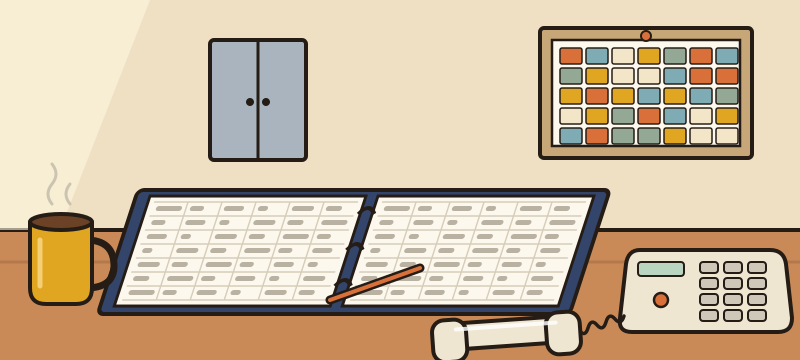
- The single question: “Do you think he has been more confused lately?” Ask a relative, a carer, the care home. It picks up about four in five cases.
- Stanley could tell us nothing. The nurse at his home could: “he lashed out … that is not Stanley.”
- NICE lists four kinds of recent change. Thinking: confused, slow, poor concentration. Perception: seeing or hearing things. Body: moving less, restless, not eating, not sleeping. Behaviour: withdrawn, hard to engage, a change in mood.
- Any of them, new within hours or days: do a 4AT.
At the trolley
Four items, about two minutes, no special training. Four or more suggests delirium.
NICE names the 4AT as the test to use outside intensive care.
Stanley: tap a row to score him
[1] ALERTNESS
This includes patients who may be markedly drowsy (e.g. difficult to rouse and/or obviously sleepy during assessment) or agitated/hyperactive. Observe the patient. If asleep, attempt to wake with speech or a gentle touch on the shoulder. Ask the patient to state their name and address to assist rating.
Stanley: agitated, climbing off the trolley · 4
[2] ABBREVIATED MENTAL TEST – 4 (AMT4)
Ask the patient to state their age, date of birth, place (name of the hospital or building), current year
Stanley: answers none of them · 2
[3] ATTENTION (MONTHS BACKWARDS)
Ask the patient: “Please tell me the months of the year in backwards order, starting at December.” To assist initial understanding one prompt of “what is the month before December?” is permitted.
Stanley: “Where’s my coat.” · 2
[4] ACUTE CHANGE OR FLUCTUATING COURSE
Evidence of significant change or fluctuation in: alertness, cognition, other mental function (e.g. paranoia, hallucinations) arising over the last 2 weeks and still evident in last 24 hrs
Stanley: not himself since yesterday · 4
- 4 + 2 + 2 + 4 = 12.
- 4 or more suggests delirium. 1 to 3 suggests a memory and thinking problem but not delirium. 0 makes both unlikely, but does not rule them out.
- A patient too drowsy or too agitated to answer still gets a score.
- Once his bladder was drained he scored 7. Quieter, not clear.
- Repeat it every day until he is better.
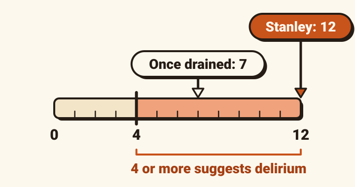
4AT © 2011–2014 Alasdair MacLullich, Tracy Ryan and Helen Cash. Licensed under CC BY 4.0: https://creativecommons.org/licenses/by/4.0/. Official and current version: https://www.the4at.com/. No changes have been made. No warranty is given as to accuracy or fitness for purpose.
The decision: what has done this?
There is usually more than one cause. Look for all of them.
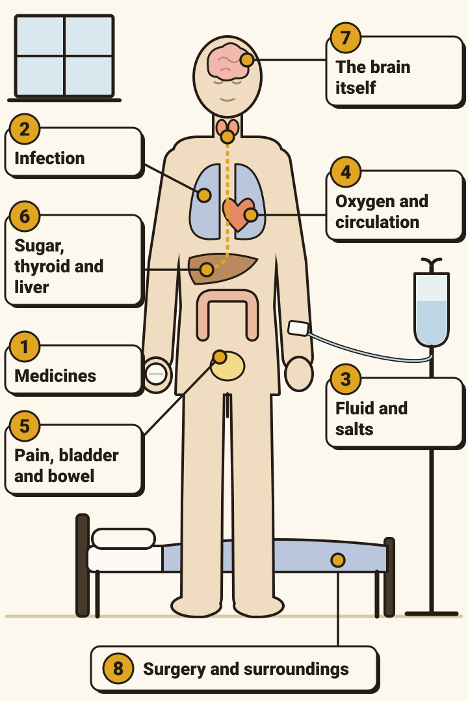
- First, what kills quickly: low oxygen, low blood pressure, low blood sugar, and a drug that is poisoning him or has been stopped. Stanley: 96% on air, 148/82, glucose 6.4.
- Then eight places to look. Tap each for the full list.
- To remember them, PINCH ME: Pain, INfection, Nutrition, Constipation, Hydration, Medication, Environment. Or spell DELIRIUM (tap).
- In up to 30% no cause is found. Normal tests do not rule delirium out.
- Stanley had three: influenza, a full bladder, and his medicines.
“That’s the nine.”
Read the whole list, including the tablets he has taken for years.
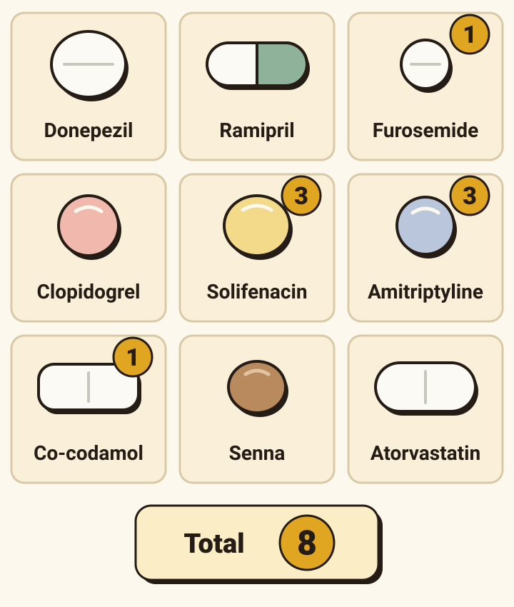
- Ask three things: what was started, what was stopped, and what has he always been on. Long-standing medicines can do it too.
- The usual suspects: opioids, benzodiazepines, and anticholinergic medicines such as tricyclic antidepressants, bladder tablets and older antihistamines.
- Anticholinergic effects add up. One published scale gives Stanley’s list 8: amitriptyline 3, solifenacin 3, codeine 1, furosemide 1. Three or more is the usual level for concern.
- The scale counts effects on thinking. It does not measure the effect on the bladder, where codeine acts as an opioid.
- Nothing on his list was new.
- Stopping can cause it too: alcohol and sedatives above all. Do not suddenly stop a drug the body has come to depend on.
Tap for the full list of drug types
- Benzodiazepines. Opioids. Tricyclic antidepressants. Antihistamines, especially the older ones. Antispasmodics and anti-sickness drugs. Medicines for Parkinson’s disease. Anticonvulsants. Steroids. Anti-inflammatory painkillers. Digoxin. Beta blockers. Diuretics. Theophylline. Lithium. Quinolone antibiotics.
- Bought without a prescription: remedies containing diphenhydramine, chlorphenamine or promethazine; hyoscine for the bowel.
The bladder scan · one litre
A full bladder can cause delirium, and the patient cannot tell you.
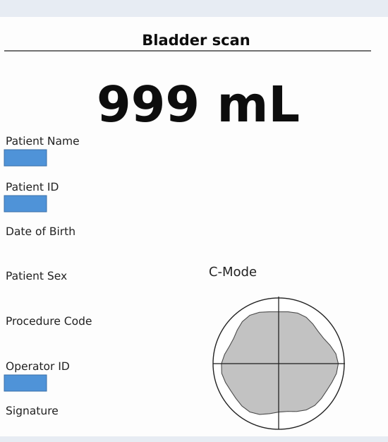

- Stanley’s abdomen was soft. His bladder held a litre.
- Urinary retention is commonly missed in older people. A patient with retention may still be passing urine.
- It is not found unless someone looks: a bladder scan. For the bowel: the bowel chart, and an examination.
- PINCH ME has no letter for the bladder. Add one.
- Guidelines say avoid catheters, because they add to the risk of delirium. They also say treat retention. Both are right: use a catheter when it is needed, only while he is unwell, and plan its removal on the day it goes in.
- Within the hour of being drained, Stanley was quieter and let people near him.
He hits out when he is washed and dressed
Before you treat the behaviour, ask what it is telling you.
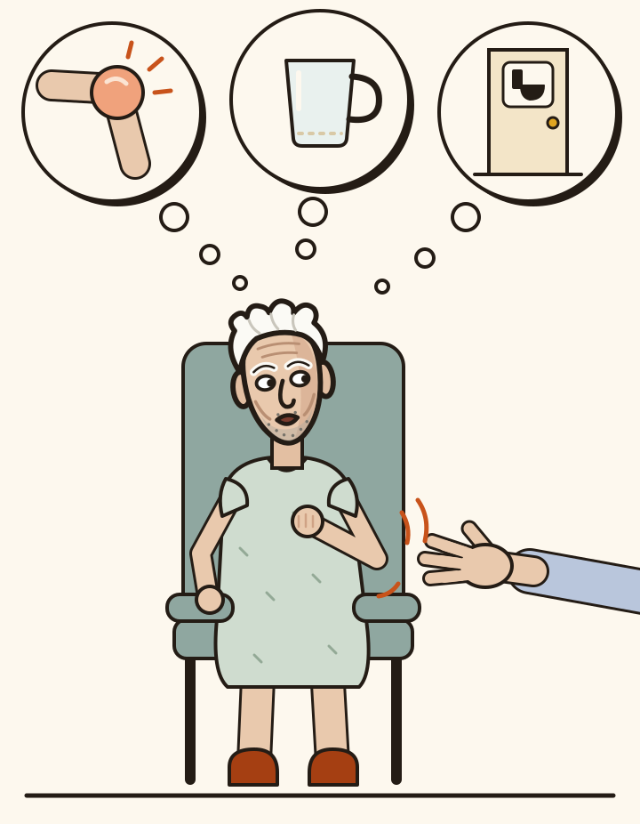
The nurse: “He’s hit a carer and he’s climbing off the trolley. Can you write him up for something?”
- Not yet. First look for what is causing the agitation: pain, thirst, a need for the toilet.
- People with dementia may show pain only in the face and in how they move. Look for it and treat it.
- Stanley hit out when he was handled, not at rest. It was the only way he could report a litre in his bladder.
- A sedative would have made him quiet and taken away the clue.
The decision: which tests, and why each?
A short set of tests, each with a job. Not every test for every patient.
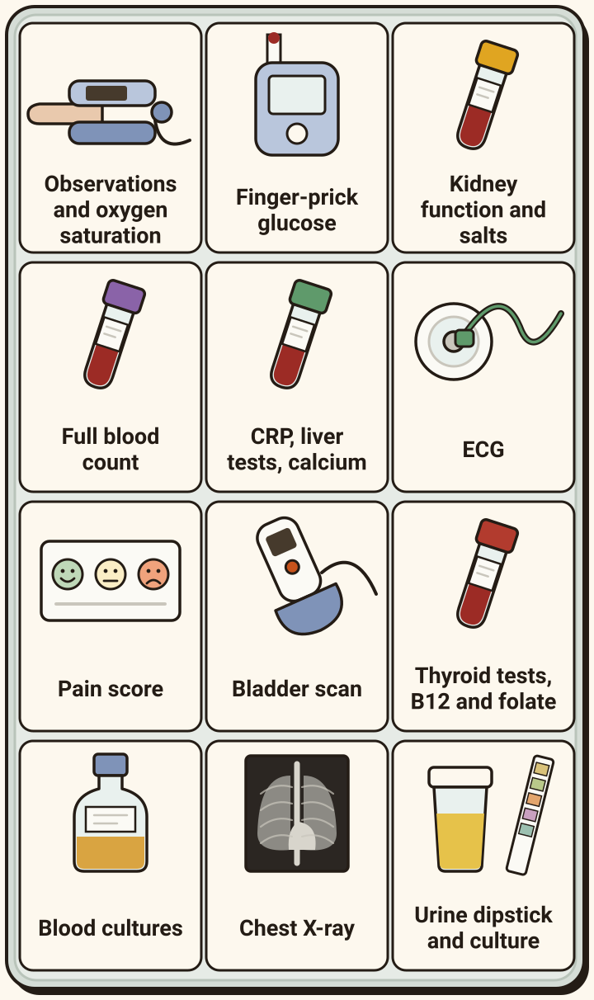
- NICE lists no tests. The Scottish guideline does, and says to choose them from the history and the examination.
- For nearly everyone: observations and oxygen saturation · finger-prick glucose · kidney function and salts · full blood count · CRP · liver tests · calcium · ECG · a pain score · a bladder scan.
- If there is a reason: thyroid tests · vitamin B12 and folate · blood cultures · chest X-ray · urine dipstick and culture.
- Do not order tests that will change nothing.
Tap a test for what it looks for, and what Stanley’s showed.
Leucocytes positive · nitrite positive
In an older person, a positive dipstick does not prove a urine infection.
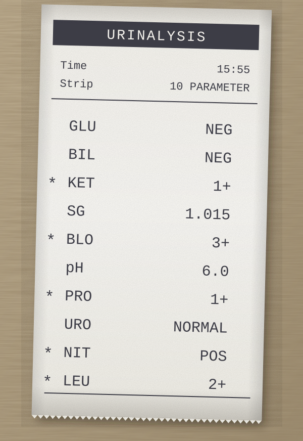
- By the age of 80, about half of people living in care homes have bacteria in their urine without an infection. Treating it with antibiotics does no good and may do harm.
- So over 65, do not use a dipstick to diagnose a urine infection. Go on symptoms: new pain on passing urine, or two of these: fever, new frequency or urgency, new incontinence, new or worse confusion, new pain low in the tummy, visible blood.
- Fever and confusion only? Rule out other infections first.
- Stanley’s stick was positive. His white cell count was normal, his swab showed influenza A, and his bladder held a litre.
- His urine later grew E. coli. That was bacteria in the urine without a urinary infection.
The decision: “shall we scan his head?”
None of the three is routine. Each needs a reason.
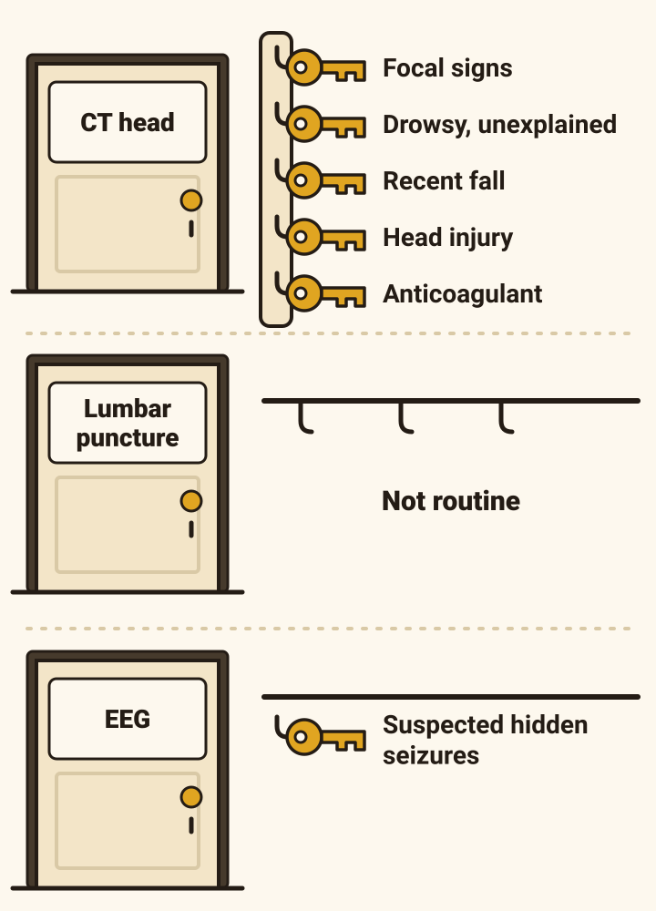
- CT head: not routinely. Think of it with new weakness or other focal signs, drowsiness nothing else explains, a recent fall, a head injury, or an anticoagulant.
- Lumbar puncture: not routinely.
- EEG (brain wave recording): only if you suspect seizures you cannot see.
- Stanley: no fall, no focal signs, and clopidogrel is not an anticoagulant. No reason for any of the three.
Tap for more
- Also think of a scan when a delirium is not clearing and no cause has been found.
- In one small, old study of patients with fever and delirium, 80 of 81 spinal fluid samples grew no bacteria.
- A lumbar puncture can distress a confused, agitated patient, and it has risks.
- Hidden seizures may be commoner in delirium than was thought.
The decision: what goes in the nursing plan?
The treatment is the cause, plus a dozen ordinary things done well.
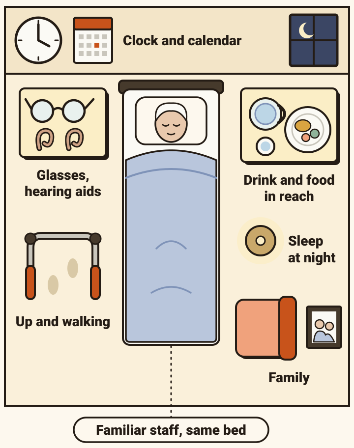
- First: find and treat every cause.
- Then the list that prevents delirium also treats it. Tell him where he is and who you are. Glasses on, hearing aids in. A clock he can see. Drinks and food in reach, with help. Up and walking. Sleep at night. Familiar staff. No moves between beds or wards unless there is no choice.
- Given as a package to people at risk, this care means fewer of them become delirious.
- The family. Tell them it is delirium, that it is common and usually temporary. Ask what he is normally like. Ask them to bring his glasses, hearing aids and something familiar, to sit with him, and to tell you if he changes.
Tap for the whole list
- Good light and clear signs; a calendar; talk about familiar things.
- Check for ear wax; dentures that fit.
- Treat constipation; no catheter unless it is needed.
- Check oxygen. Look for pain and treat it.
- Review the medicines.
- No procedures or drug rounds in sleeping hours; keep the noise down.
- Speak calmly. Do not argue. Do not insist on a wash or a shave that can wait.
- A “This is me” or “Getting to know me” form, filled in by the family.
- Let him walk if it is safe. Relax the visiting hours. Extra staff if he is distressed.
The decision: “can we give him something?”
Sedation is the last step, and it never replaces the first three.
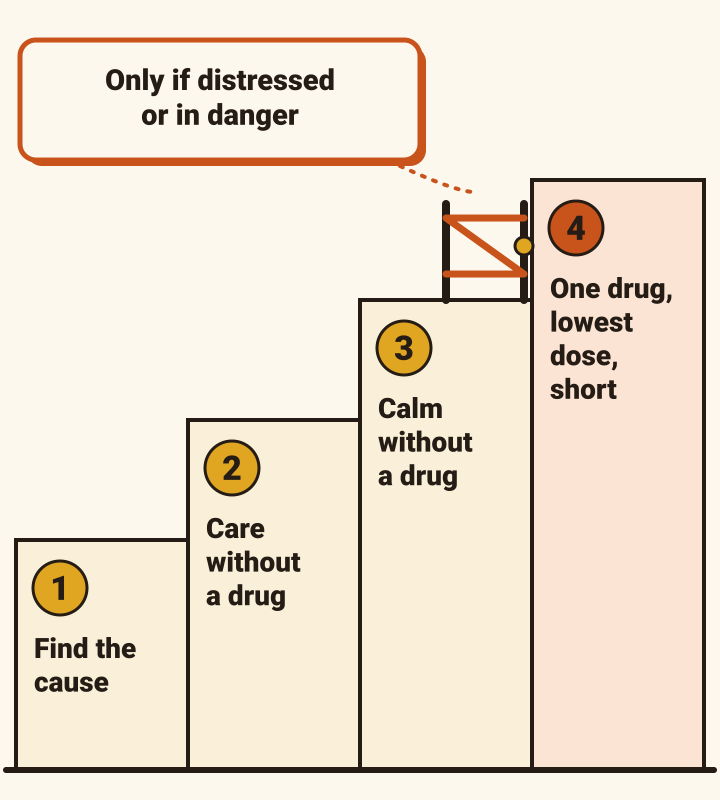
- Step 1. Find and treat the cause.
- Step 2. The care on the last screen.
- Step 3. Calm him without a drug: a quiet voice, time, space, someone he knows.
- The gate. Only if he is still distressed, or a danger to himself or others, and step 3 has failed or cannot be tried.
- Step 4. One drug. The lowest dose. By mouth if he will take it. Reviewed every day. Stopped within days: NICE says usually a week or less.
- A sedative is not a restraint.
- Sedatives carry risks, including falls and food or drink going down the wrong way. They can cause delirium themselves.
Haloperidol 500 micrograms
NICE names one drug and no dose. Start with half a milligram.
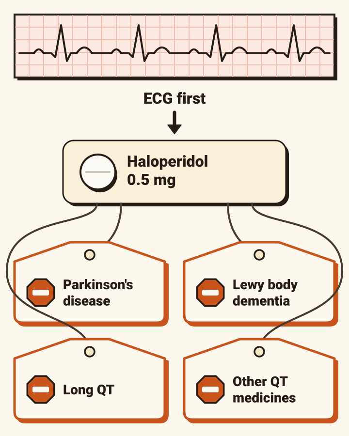
- Haloperidol. In an older person, start with 0.5 mg by mouth. Into muscle only if he cannot take it by mouth.
- Before it: an ECG, and potassium, magnesium and calcium put right.
- The most in a day: the guides differ, from 2 mg to 5 mg in an older person. Use your own trust’s.
Who must not have it (tap)
- Parkinson’s disease.
- Dementia with Lewy bodies.
- A long QT interval on the ECG.
- Another medicine that lengthens the QT.
- Never two antipsychotics together without specialist advice.
- Watch for a high fever, stiffness, confusion and a swinging blood pressure: a rare, dangerous reaction. Get senior help at once.
- Alcohol withdrawal is treated differently: it has its own guideline.
- Stanley took three medicines that can lengthen the QT interval: amitriptyline, donepezil and solifenacin. Several guides would call haloperidol contraindicated for him. He did not need it. He needed his bladder drained.
- Lorazepam is not in the NICE guideline. Some local guides keep it for when an antipsychotic cannot be used. It can make confusion worse. Ask a senior.
- Stop the drug before he goes home. If you cannot, say so in the discharge letter.
He is trying to leave
He may not be able to decide this for himself. Then you decide for him, by rules.
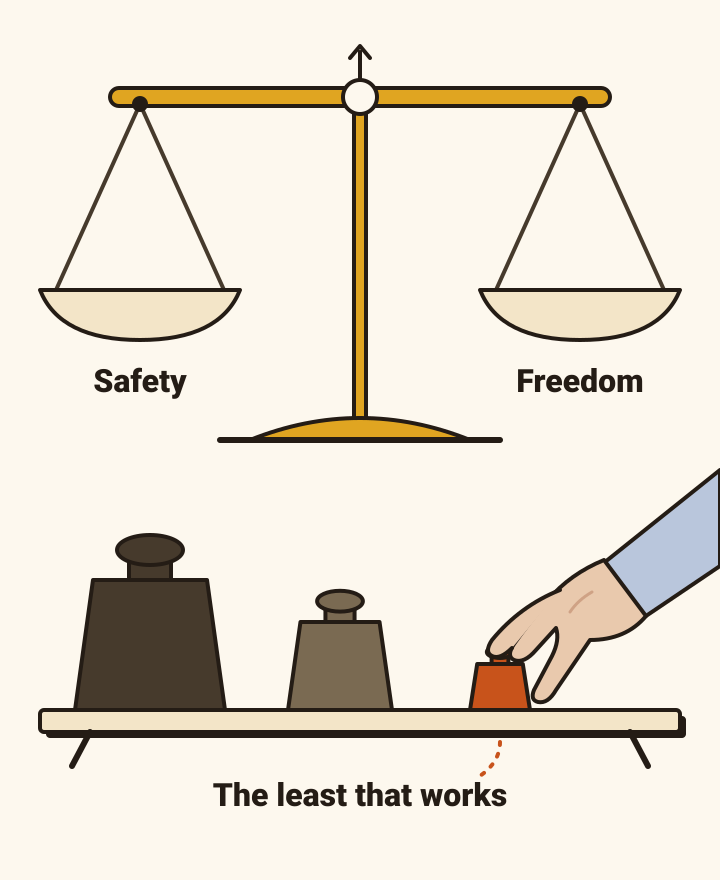
- Start by assuming he can decide. Test his capacity for this decision, now. Delirium can take it away, and it can come back. Check again.
- If he cannot decide: act in his best interests, ask the people close to him, and choose the way that restricts him least.
- Restraint means using force, or limiting his freedom to move. It is lawful only to prevent harm to him, and only the least force for the shortest time. Never to make the work easier.
- If he is under continuous supervision and control, and not free to leave, that may be a deprivation of liberty. That needs formal authorisation: the Deprivation of Liberty Safeguards (DoLS). A hospital can give itself an urgent authorisation for up to seven days while it applies for a standard one.
- The code says an urgent authorisation is not for an illness expected to clear quickly. So in most delirium: least restriction, review every day, and ask a senior early.
Settled, and still scoring 7
Most delirium clears in days. Some does not, and it leaves a mark.
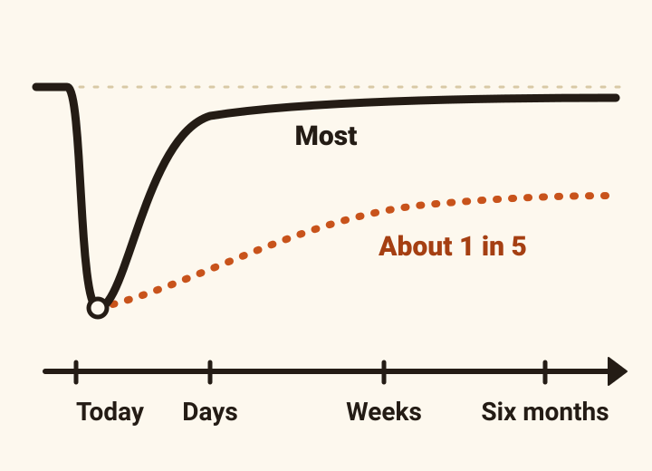
- Most clears within a few days. In about one in five it lasts weeks or months. One guide says recovery can take up to six months, and some people do not get all the way back.
- Not clearing? Look again for a cause. Think about a head scan. Later, check for dementia, but one guide says not usually to diagnose it within six months of a delirium.
- Going home: write “delirium” in the discharge letter and the GP record. Ask the GP to see him.
- He is at higher risk next time. Delirium is also a risk factor for later memory decline.
- No driving until it has fully cleared.
Thursday, 15:05, one last time
Four explanations each fitted part of him. One fitted all of him.
![Five explanations. A urine infection fits new confusion, a temperature, CRP 84 and a positive dipstick; it leaves over a normal white cell count, influenza on the swab and a litre in the bladder. A chest infection fits cough, temperature and CRP 84; it leaves over a clear chest, normal oxygen, a clear X-ray and the kidneys. He is dry fits days of sips, a water tablet and urea 24.6; it leaves over normal blood pressure, not dry on examination and a litre in the bladder. It is his dementia fits nothing; it leaves over a change over four days. Influenza, a blocked bladder, and his medicines fits all of it.](care-delirium-debrief-fits.svg)
- The reflex answers were a urine infection, a chest infection, “he’s dry”, and “it’s his dementia”.
- What explained all of him: influenza, a bladder that had stopped emptying, and three long-standing medicines that stopped it.
- The delirium was how he told us. His kidneys have their own page: Acute kidney injury: the debrief.
Take home
- New confusion over hours or days is delirium until proved otherwise, even in someone with dementia.
- Ask someone who knows them. Do a 4AT. Four or more: look for causes.
- There are usually several. Medicines, infection, pain, the bladder and the bowel come first.
- Do not treat a dipstick. Do scan a bladder.
- Cause first, care second, a drug last: haloperidol 0.5 mg, after an ECG, and never in Parkinson’s disease or dementia with Lewy bodies.
Where this comes from.
Delirium guidelines
- NICE. Delirium: prevention, diagnosis and management in hospital and long-term care (CG103). 2010; updated January 2023. nice.org.uk/guidance/cg103
- Scottish Intercollegiate Guidelines Network. Risk reduction and management of delirium (SIGN 157). 2019. sign.ac.uk
- British Geriatrics Society. Delirium hub: delirium in specific settings and situations. bgs.org.uk. CGA in primary care settings: patients presenting with confusion and delirium. 2019. bgs.org.uk. Clinical guidelines on delirium and transient loss of consciousness. 2014. bgs.org.uk
- NHS Greater Glasgow and Clyde. Management of acutely disturbed patients, including delirium. Reviewed 2022. handbook.ggcmedicines.org.uk
- NHS Lanarkshire. Delirium guidelines, version 2.0. 2020. rightdecisions.scot.nhs.uk
- Bedfordshire Hospitals. Guidelines for the prevention, recognition and management of delirium in adults in the acute hospital setting (CG387). 2018. bedfordshirehospitals.nhs.uk
The test, the dipstick and the drug
- The 4AT. the4at.com
- UK Health Security Agency. Diagnosis of urinary tract infections: quick reference tools for primary care. Updated 2025. gov.uk
- British National Formulary. Haloperidol. bnf.nice.org.uk/drugs/haloperidol
- MHRA. Haloperidol (Haldol): reminder of risks when used in elderly patients for the acute treatment of delirium. December 2021. gov.uk
- Boustani M, et al. Anticholinergic Cognitive Burden scale, 2012 update.
Capacity and liberty
- Mental Capacity Act 2005 Code of Practice. 2007. gov.uk
- Deprivation of liberty safeguards: Code of Practice to supplement the main Mental Capacity Act 2005 Code of Practice. 2008. gov.uk
Supporting
- RCEMLearning. Assessment of dementia in the ED: dementia, delirium and depression. rcemlearning.co.uk
- NICE Clinical Knowledge Summaries. Delirium: differential diagnosis. Revised April 2026. cks.nice.org.uk
Local guides differ on doses. Follow your own trust’s. Checked October 2026.